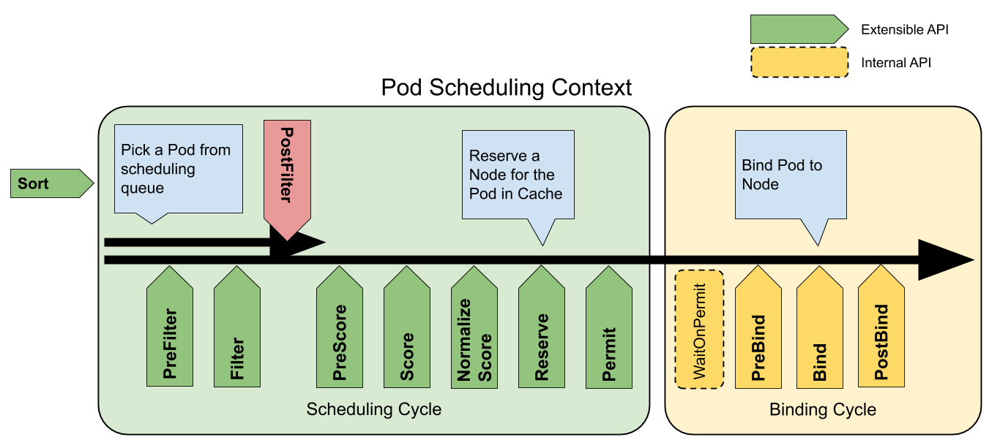
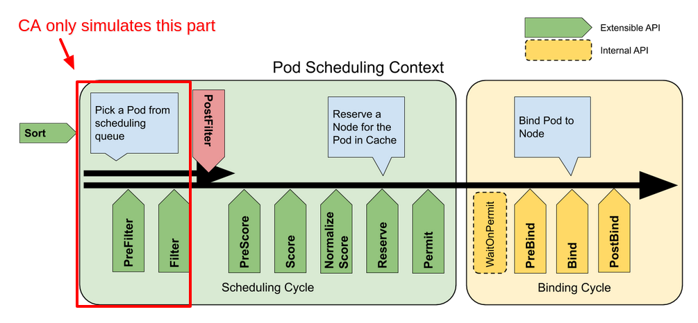

Would cluster-autoscaler consider my soft constraints?
Contents
Problem
CA (cluster-autoscaler) considers scheduling constraints like nodeSelector, requiredDuringSchedulingIgnoredDuringExecution node affinity but it doesn’t consider “soft” constraints like preferredDuringSchedulingIgnoredDuringExecution node affinity or ScheduleAnyway pod topology spread (ref1, ref2) constraint.
However, CA does not consider “soft” constraints like
preferredDuringSchedulingIgnoredDuringExecutionwhen selecting node groups. That means that if CA has two or more node groups available for expansion, it will not use soft constraints to pick one node group over another.
- Why does CA not support
preferredDuringSchedulingIgnoredDuringExecutionorScheduleAnywaypod topology spread constraint? - Is there a way to identify what constraint is supported/not supported?
Answer for 1 is already available in pieces in the cluster-autoscaler’s github issue comments. This blogpost
- paraphrases the comments so that they’re easier to understand
- attempts to tie all the pieces together
Answer for 2 might not completely answer the question but I hope it puts you in a better position to answer the question yourself.
1. Why does CA not support preferredDuringSchedulingIgnoredDuringExecution or ScheduleAnyway pod topology spread constraint?
Cluster autoscaler only works with default scheduler, any form of custom scheduling is not supported.
The reason for this is CA works by importing kubernetes scheduler code, running it internally and expecting that the result will be exactly what scheduler will do.
What does this mean?
During scale-up, CA creates a fake node in the code and simulates scheduling the Pending pods on it (ref). If the Pending pods can be scheduled, CA creates an actual node based on the fake node i.e., scale-up happens.
Similarly, during scale-down, when CA wants to scale-down a node, it simulates scheduling the pods on this node to other nodes in the cluster (ref). If it’s able to successfully do it, the node can be considered for scale-down.
What does simulates scheduling here mean? CA works by importing kubernetes scheduler code, running it internally and expecting that the result will be exactly what scheduler will do
But it doesn’t fully simulate the scheduler. It only simulates a part of it.
Let’s first take a detour and look at the scheduler:

The scheduling cycle selects a node for the Pod, and the binding cycle applies that decision to the cluster. Together, a scheduling cycle and binding cycle are referred to as a “scheduling context”.
Scheduling cycles are run serially, while binding cycles may run concurrently.
In this picture “Filter” is equivalent to “Predicate” and “Scoring” is equivalent to “Priority function”.
Note: I am going to ignore Binding Cycle phase + Reserve and Permit extension points since they aren’t relevant here.
Scheduling Cycle of the scheduler can be divided into roughly 2 parts:
1. Filtering (Predicates)
Filtering phase filters the nodes which can be used to schedule the Pending pod. PreFilter, Filter and PostFilter extension points above can be thought of as part of the Filtering phase.
2. Scoring (Priority Functions)
Scoring phase decides which node gets to host the pod based on scores alloted to the node. PreScore, Score, Normalize Score can be thought of as a part of Scoring phase. This phase can be thought of as a way to rank the nodes we got from the Filtering phase so that we can choose one of them for our pod.

CA only uses Filtering part in the simulations (PreFilter and Filter extension points to be precise)
Looking at where the Filtering part of scheduler is called in the CA:
CheckPredicatesfunction
|
|
FitsAnyNodeMatchingfunction
|
|
framework in both the code snippets above is of type schedulerframework.Framework. You can find it defined here. schedulerframework is a part of scheduler code among other libraries imported in the CA code here.
Anything that changes the behavior of scheduler predicate functions breaks CA.
Predicate functions here stand for Filtering phase extension points (as explained above). To elaborate, say you change something in the scheduler config that might change the behavior of the PreFilter and Filter extension points of your cluster’s scheduler (which runs as a part of your cluster’s control plane).
CA imports the PreFilter and Filter part of the default scheduler code i.e., it doesn’t allow making any changes to the default behavior. Because of this CA’s simulation of the scheduler won’t accurately reflect the actual scheduler running in your cluster since your cluster/control plane scheduler’s behavior would be different than CA’s simulated scheduler. This would create problems because CA’s autoscaling won’t accurately match the needs of your cluster.
Well, why can’t we do something about it so that CA considers the customizations done in the cluster’s scheduler?
There were many discussions of this in the past. The problem is CA doesn’t actually know anything about scheduling. It’s built around importing scheduler code and using it as a sort of black box oracle. All CA decisions are based on simulations, performed by creating in memory node objects and feeding them to scheduler to see if currently pending pods would be able to schedule if a new node was added.
There were some discussions about exposing a ‘dry run’ API in scheduler. The problem is we need to run a ton of those scenarios, using some imaginary nodes, pretending some nodes don’t exist or pretending some pods are running on different pods than they really are. Scheduler doesn’t support any of that and even if it did we believe the performance impact of serializing all those objects and sending them to scheduler is prohibitive (we would need to make thousands of such requests per loop).
To sum up full support for custom scheduling would require massive changes in both scheduler and CA and we don’t think it would work anyway. I think it’s safe to say it’s not likely to happen for general case.
Now to answer the original question, why does CA not support preferredDuringSchedulingIgnoredDuringExecution or ScheduleAnyway pod topology spread constraint?
CA doesn’t consider preferredDuringSchedulingIgnoredDuringExecution because it is a part of Scoring phase of NodeAffinity scheduler plugin (comes in-built). Every scheduler plugin can act on multiple extension points. NodeAffinity acts on extension points in both Filtering and Scoring phases. The only problem is, it considers preferredDuringSchedulingIgnoredDuringExecution only in Scoring phase (PreSCore and Score extension points to be precise) and not in Filtering phase. Let’s look at the NodeAffinity plugin code which acts during PreScore and Score phase:
PreScore:
|
|
Score:
|
|
Similarly, ScheduleAnyway is a part of scoring phase of the PodTopologySpread plugin
|
|
initPreScoreState is called in PreScore function here.
While DoNotSchedule is a part of the Filtering phase of the PodTopologySpread plugin
|
|
calPreFilterState is called in PreFilter function here.
Related: https://github.com/kubernetes/autoscaler/issues/3879#issuecomment-1480661410
2. Is there a way to identify what constraint is supported/not supported?
|
|
CA supports the above scheduler plugins (these are the in-built plugins enabled in the scheduler by default).
You can go to https://kubernetes.io/docs/reference/scheduling/config/#scheduling-plugins to identify which plugin acts on which extension points. e.g., Let’s look at the documentation for NodeAffinity plugin:
NodeAffinity: Implements node selectors and node affinity. Extension points:filter,score.
Note: Extension points are written in lower camel case in the docs above e.g., PreFilter is written as preFilter while Filter is written as filter etc.,.
Note that NodeAffinity acts on both Filter and Score extension points of Filtering and Scoring phase respectively. CA would simulate this plugin partially i.e., only the Filter extension point. This means not all features supported by NodeAffinity would be considered by the CA.
You might find some plugins not listed in https://kubernetes.io/docs/reference/scheduling/config/#scheduling-plugins. These plugins (at the time of writing this blogpost) are:
|
|
To understand at which extension points they act, just go to the definition of <plugin-name>.New above. e.g., if you go to the definition of dynamicresources.New and scroll through the file:
|
|
You will see it acts on many different extension points in both Filtering and Scoring phase.
You can use one of the methods above (look at the docs or look at the code) for other plugins of interest. If the plugin acts only on Scoring phase’s extension points, CA won’t consider it. If it acts on both Filtering and Scoring phase, CA will only consider Filtering phase (only PreFilter and Filter extension points to be precise).
As a general rule of thumb, “soft” constraints are usually a part of Scoring phase so CA most probably won’t consider them.